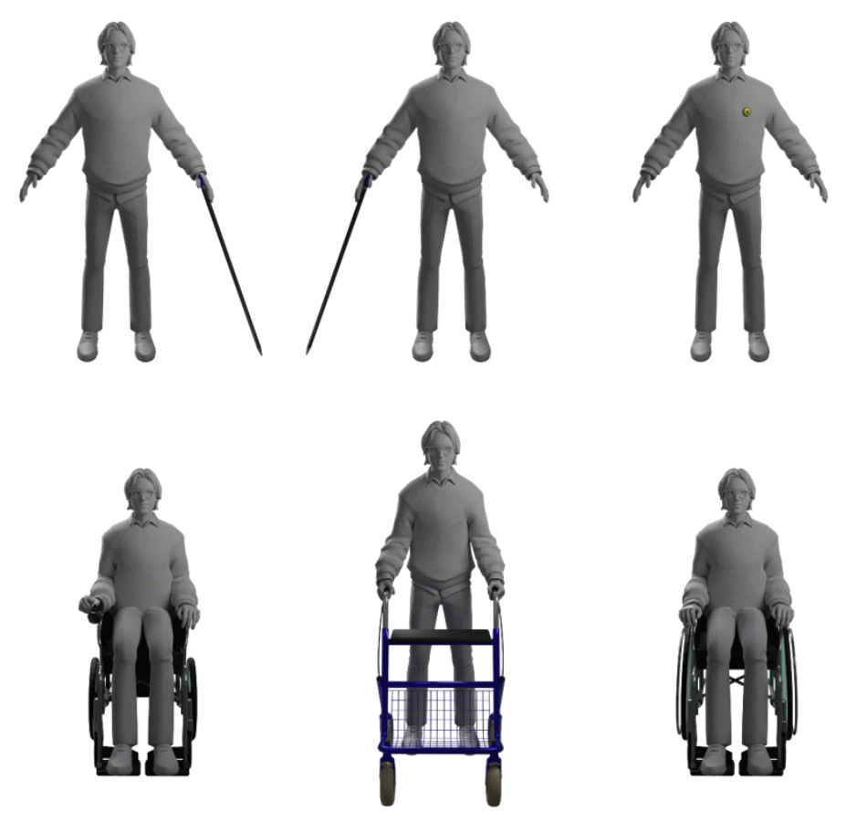

Is it Part of Me? Exploring Experiences of Inclusive Avatar Use For Visible and Invisible Disabilities in Social VR

Venue. ASSETS (2024)
Abstract. Social Virtual Reality (VR) platforms have surged in popularity in recent years, including among people with disabilities (PWD). Previous research has documented accessibility challenges, harassment, and negative experiences for PWD using disability signifiers in VR, primarily focusing on those with visible disabilities who encounter negative experiences. Yet, little is known about the experiences of people with invisible disabilities in social VR environments, and whether positive experiences are also common. To address these gaps, we designed inclusive avatars (avatars with disability signifiers) and investigated the lived experiences of 26 individuals with both visible and invisible disabilities immersing themselves in social interactions in VRChat for a week. We utilized a mixed methods experience sampling design and multilevel regression to explore the relationships between social interactions of PWD in VR and various psychological outcomes. Our results indicate that PWD, both visible and invisible, experienced positive and negative social interactions in VR. These interactions, in turn, significantly influenced users’ overall experience with inclusive avatars, affecting aspects such as emotional responses, engagement levels, satisfaction with the avatar’s design, and perceptions of inclusion in VR. Qualitative interviews of 18 participants allowed for a more nuanced exploration of the experiences of PWD by giving voice to users who are rarely studied in depth. Findings provided unique insights into both the positive and negative experiences of PWD, as well as identified key design factors influencing user experience in social VR.
Link to this page: